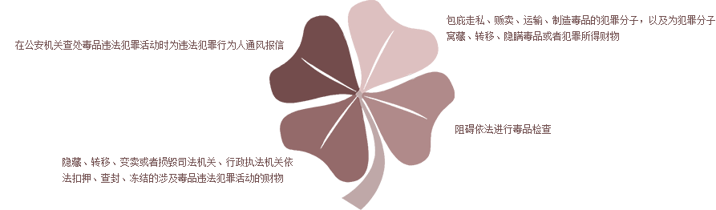

一、禁毒法规摘录
《禁毒法》第六章 法律责任 第五十九条 有下列行为之一，构成犯罪的，依法追究刑事责任；尚不构成犯罪的，依法给予治安管理处罚：
第六十条 有下列行为之一，构成犯罪的，依法追究刑事责任；尚不构成犯罪的，依法给予治安管理处罚：

第六十九条 公安机关、司法行政部门或者其他有关主管部门的工作人员在禁毒工作中有下列行为之一，
构成犯罪的，依法追究刑事责任；尚不构成犯罪的，依法给予处分：
二、案例
1、容留他人吸毒罪。
2014年8月18日，传房祖名涉嫌容留他人吸毒罪被刑拘。2015年1月9日上午，房祖名涉毒案在北京东城区法院开庭审理。审判员当庭宣判，
房祖名获刑六个月，并处罚金人民币二千元。
外链：http://www.iqiyi.com/v_19rrnxcgg4.html
2、教唆他人吸毒罪
2014年12月，张清国向林某介绍吸食冰毒后的体验，邀其共同吸食，并当场演示如何吸毒，后林某仿效张清国的方法吸食冰毒。法院依法对被告人张清国以教唆他人 吸毒罪判处有期徒刑8个月
3、死刑
被告人王某多次吸食冰毒，2014年10月因连续吸食毒品出现言语性幻听、被害、嫉妒妄想等症状。同年11月21日王某因争执将女友按倒在地，并用菜刀砍击、切割沈的颈部、左面颊部、腰部、臀部等处数刀致其当场死亡。法院最终判处被告人王某死刑，缓期两年执行，剥夺政治权利终身。
4、运输毒品罪
47岁的郭某和41岁的杨某是一对夫妻，2014年6月13日，他们购买了36000元的毒品，并把一部分毒品拿到旅馆藏匿，一部分随身携带。警方将其抓捕后共查获的毒品甲基苯丙胺共计99.8克，海洛因共计50.1克，法院审理认为，郭某和杨某行为均已构成运输毒品罪，两人系共同犯罪，杨某在整个毒品犯罪环节中处于从属、辅助地位，系从犯。郭某被判处无期徒刑，没收个人全部财产；杨某判处有期徒刑十二年。
信息来源：
中央人民政府官网 http://www.gov.cn/flfg/2007-12/29/content_847311.htm
网易 http://ent.163.com/special/kzdxdbz/
中国网法制频道 http://www.china.com.cn/legal/2015-06/24/content_35896108.htm
河北新闻网 http://sjz.hebnews.cn/2015-06/26/content_4867116.htm
腾讯新闻 http://xian.qq.com/a/20150626/008149.htm